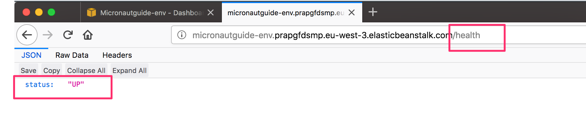

mn create-app example.micronaut.micronautguide --build=maven --lang=kotlinDeploy a Micronaut application to AWS Elastic Beanstalk
Learn how easy is to deploy a Micronaut Application to Elastic Beanstalk.
Authors: Sergio del Amo
Micronaut Version: 3.9.2
1. Getting Started
In this guide, we will create a Micronaut application written in Kotlin.
You will learn how to deploy a Micronaut application to AWS Elastic Beanstalk.
AWS Elastic Beanstalk is an easy-to-use service for deploying and scaling web applications and services developed with Java.
2. What you will need
To complete this guide, you will need the following:
-
Some time on your hands
-
A decent text editor or IDE
-
JDK 1.8 or greater installed with
JAVA_HOMEconfigured appropriately
3. Solution
We recommend that you follow the instructions in the next sections and create the application step by step. However, you can go right to the completed example.
-
Download and unzip the source
4. Writing the Application
Create an application using the Micronaut Command Line Interface or with Micronaut Launch.
If you don’t specify the --build argument, Gradle is used as the build tool. If you don’t specify the --lang argument, Java is used as the language.
|
The previous command creates a Micronaut application with the default package example.micronaut in a directory named micronautguide.
Micronaut management dependency adds support for monitoring of your application via endpoints: special URIs that return details about the health and state of your application.
Add the management dependency:
pom.xml
<dependency>
<groupId>io.micronaut</groupId>
<artifactId>micronaut-management</artifactId>
<scope>compile</scope>
</dependency>Once you include the management dependency a /health endpoint is exposed.
Create a test to verify it:
src/test/kotlin/example/micronaut/HealthTest.kt
package example.micronaut
import io.micronaut.http.HttpRequest
import io.micronaut.http.client.HttpClient
import io.micronaut.http.client.annotation.Client
import io.micronaut.test.extensions.junit5.annotation.MicronautTest
import org.junit.jupiter.api.Test
import org.junit.jupiter.api.Assertions.assertEquals
import org.junit.jupiter.api.Assertions.assertNotNull
import org.junit.jupiter.api.Assertions.assertTrue
import jakarta.inject.Inject
@MicronautTest (1)
class HealthTest {
@Inject
@field:Client("/")
lateinit var client : HttpClient (2)
@Test
fun testHealthRespondsOK() {
val request: HttpRequest<Any> = HttpRequest.GET("/health") (3)
val m = client.toBlocking().retrieve(request, Map::class.java)
assertNotNull(m)
assertTrue(m.containsKey("status"))
assertEquals(m.get("status"), "UP")
}
}| 1 | Annotate the class with @MicronautTest so the Micronaut framework will initialize the application context and the embedded server. More info. |
| 2 | Inject the HttpClient bean and point it to the embedded server. |
| 3 | Creating HTTP Requests is easy thanks to the Micronaut framework fluid API. |
5. Testing the Application
To run the tests:
./mvnw test6. Deploy to Elastic Beanstalk
Create an executable jar including all dependencies:
./mvnw packageThe next screenshots illustrate the steps necessary to deploy a Micronaut application to AWS Elastic Beanstalk:


-
Select Java Platform.
-
Click Upload button

Upload your JAR.

Before you create the environment click "Configure more options". If you forget, you could change this after you created the environment.
By default, Micronaut applications listen on port 8080. Elastic Beanstalk assumes that the application listens on port 5000. There are two ways to fix this discrepancy: change the port Elastic Beanstalk is configured to use, or change the port the application listens on. For this post, we will change the application port.
The easiest way to do this is to specify the MICRONAUT_SERVER_PORT environment variable in the Elastic Beanstalk environment and set the value to 5000. (The configuration property name is micronaut.server.port, but the Micronaut framework lets you specify a more environment variable-friendly name).
On the Configuration page in your environment, under Software Configuration, click the settings icon.


Now you are ready to click Create Environment.

After a few minutes you will be able to access the /health endpoint.

7. Next steps
Explore more features with Micronaut Guides.
Learn more about AWS Elastic Beanstalk
8. Help with the Micronaut Framework
The Micronaut Foundation sponsored the creation of this Guide. A variety of consulting and support services are available.